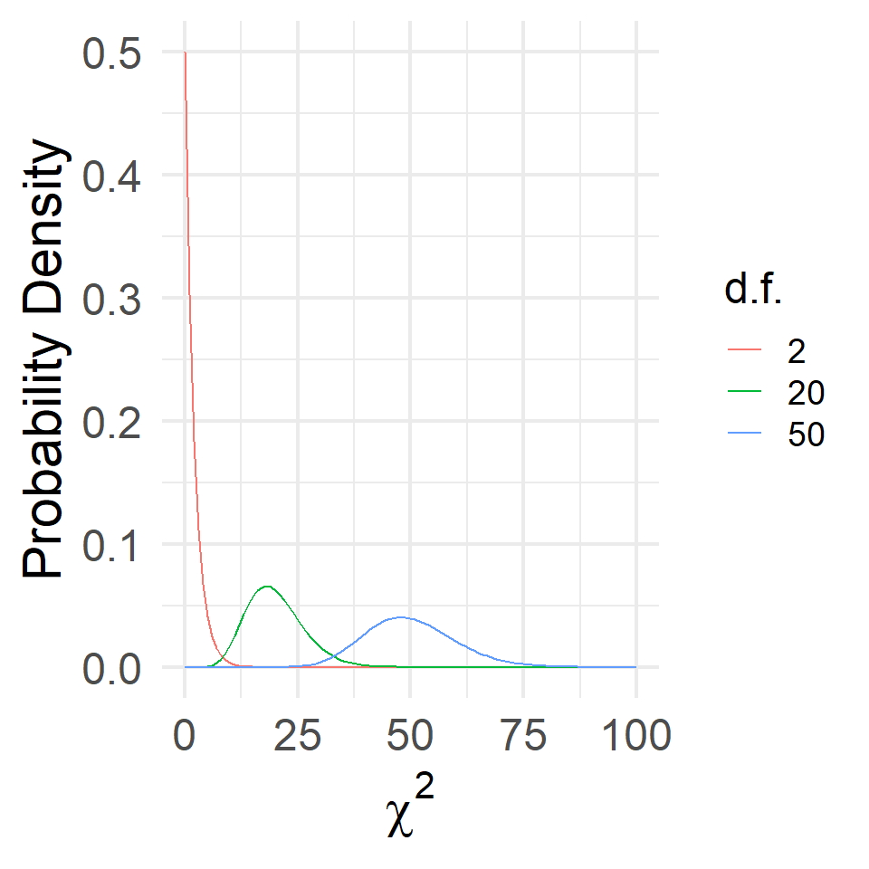
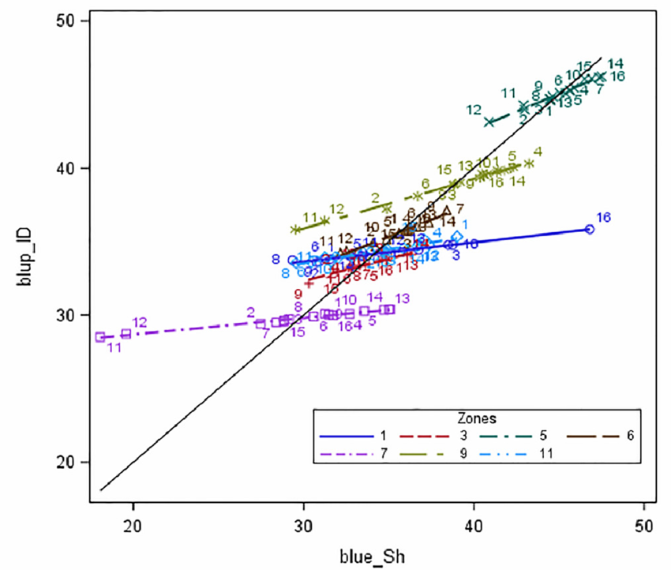
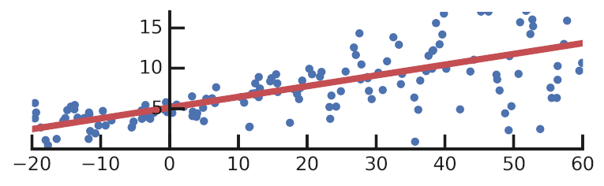
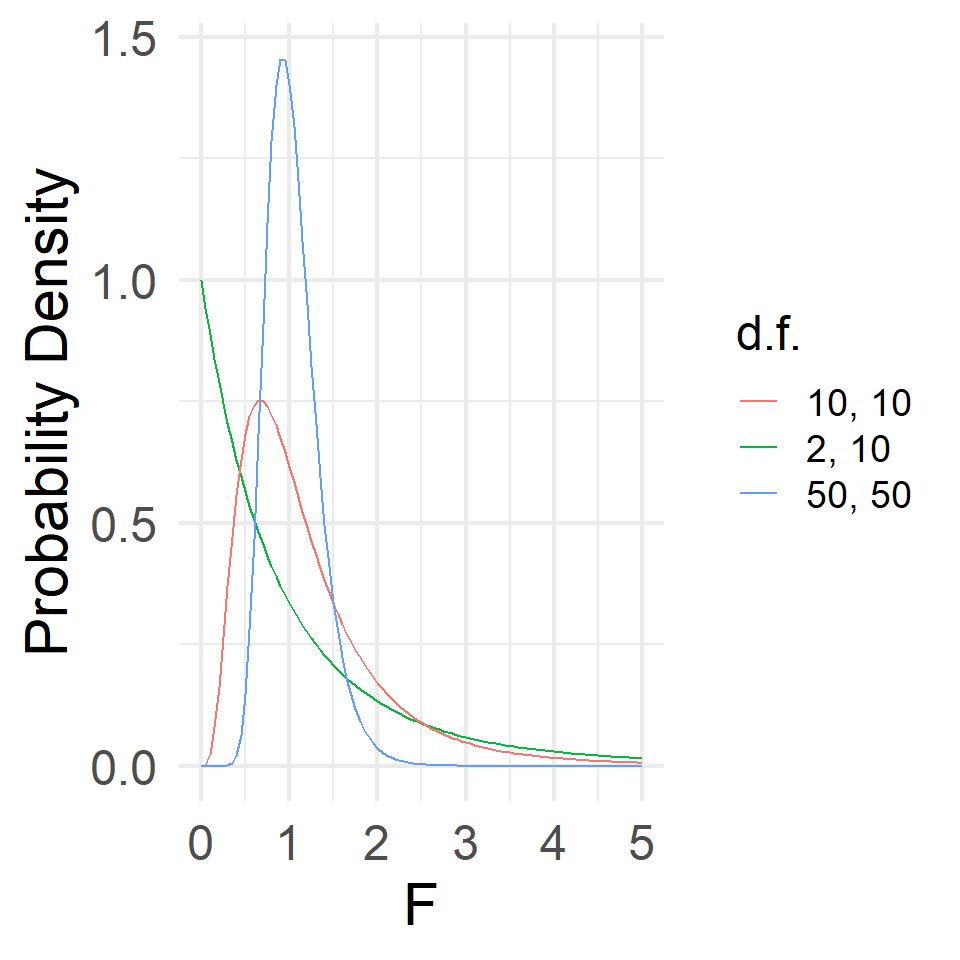

Gauss-Markov Theorem
Large N & Leeuwenhoek (70700173)
Yue Hu
Tsinghua University
Overview
\[Y_i = \beta_0 + \beta_1X + \epsilon.\]
- BLUE (Best Linear Unbiased Estimator)
- Parameter Distributions
- OLS vis-á-vis ANOVA
BLUE
What does BLUE mean


How can computer do it

What’s the problem here?
Solution: Better Algorithm by Statistics
Statistically, unbiased and consistent
Unbiasedness
\[E(\hat\beta_1|X) = \beta_1\]
Proof:
\[\begin{align} E(\hat\beta_1|X) =& E[\frac{\sum(X - \bar X)(Y - \bar Y)}{\sum(X - \bar X)^2}|X]= E[\frac{\sum(X - \bar X)Y}{\sum(X - \bar X)^2}|X],\\ =& \frac{1}{\sum(X - \bar X)^2}E[\sum(X - \bar X)Y|X] = \frac{\sum(X - \bar X)}{\sum(X - \bar X)^2}E(Y|X),\\ =& \frac{\sum(X - \bar X)}{\sum(X - \bar X)^2}(\beta_0 + \beta_1X + \epsilon) = \frac{\sum(X - \bar X)}{\sum(X - \bar X)^2}(\beta_0 + \beta_1X),\\ =& \frac{1}{\sum(X - \bar X)^2}[\beta_0\sum(X - \bar X) + \beta_1X\sum(X - \bar X)],\\ =& \frac{\beta_1\sum(X - \bar X)X}{\sum(X - \bar X)^2}, \text{given} \sum(X - \bar X) = \sum X - \sum\bar X = 0,\\ =& \frac{\beta_1\sum(X - \bar X)(X - \bar X)}{\sum(X - \bar X)^2} =\beta_1.\blacksquare \end{align}\]
Consistency
- \(var(\beta_1|X) = \frac{\sigma^2}{\sum (X_i - \bar X)^2}\).
- So when N increases, \(\sum (X_i - \bar X)^2\) increases → \(var(\beta_1)\) decreasing.
- \(\displaystyle{\lim_{n\to\infty}} var(\beta_1) = 0.\)
- So when N increases, \(\sum (X_i - \bar X)^2\) increases → \(var(\beta_1)\) decreasing.
- \(var(\hat \beta_0|X) =\sigma^2\frac{\sum X_i^2}{n\sum (X_i - \bar X)^2}=\sigma^2\frac{\sum X_i^2}{n\sum X_i^2 - n\bar X^2}\)
- When there’s a \(X_{n + 1}\),
- Nominator \(\displaystyle{\sum^n_{i = 1}}(X_i^2 + X_{n + 1}^2)\);
- Denominator \((n + 1)\displaystyle{\sum^n_{i = 1}}(X_i^2 + X_{n + 1}^2) - (n + 1)\bar X^2\)
- The denominator increases quicker than the nominator.
- When there’s a \(X_{n + 1}\),
“Ten Commandments”
- Linearity in the parameter;
- Nonstochastic X (“X is fixed”);
- X has positive noninfinite variance (σX > 0);
- Identification
- N > K; K = 2 for a simple OLS);
- Mean zero errors
- E(εi|Xi) = 0;
- Correct specification;
- Exogeneity: No covariance between Xi and εi
- E(Xiεi) = cov(xi, εi) =0;
- No autocorrelation
- E(εi, εJ|Xi, Xj) = cov(εi, εJ|Xi, Xj) = 0, ∀ i, j);
- Homoskedasticity: constant variance of εi
- var(εi|X) = σ2;
- No perfect collinearity: there are more than one X, ∄ Xi s.t., Xi = a + b∑j = 1bjXj
→ Classic Linear Regression Model (CLRM)
Gauss-Markov Theorem
In a linear regression model in which the errors are uncorrelated, have equal variances, and expectation value of zero, the best linear unbiased estimator (BLUE) of the coefficients is given by the ordinary least squares (OLS) estimator, provided it exists.
Distribution of OLS Paramenters
\[\begin{align} u_i\sim& \text{i.i.d.} N(0, \sigma^2)\\ \hat\beta_1\sim& N(\beta_1, \frac{\hat\sigma^2}{\sum (X_i - \bar X)^2})\\ \hat\beta_0\sim& N(\beta_0, \frac{\hat\sigma^2\sum X_i^2}{n\sum (X_i - \bar X)^2}) \end{align}\]
\[\begin{align} \frac{\hat\beta_1 - \beta_1}{\sqrt{\frac{\hat\sigma^2}{\sum (X_i - \bar X)^2}}}\sim& N(0, 1^2)\\ \frac{\hat\beta_0 - \beta_0}{\sqrt{\frac{\hat\sigma^2\sum X_i^2}{n\sum (X_i - \bar X)^2}}}\sim& N(0, 1^2)\\ \frac{\hat\sigma^2}{\frac{\sigma^2}{n - 2}}\sim& \chi^2_{n - 2} \end{align}\]
From Association to OLS
ρ, Χ2, and F

χ2 is adding-up of n square normals representing variances;
F is the ratio of two χ2s. In other words, they are consistent with t-test and OLS.
ANOVA vis-á-vis OLS
| Source | Sum Square | d.f. | Mean Square |
|---|---|---|---|
| Treat | \(SST = \sum n_i (\bar X_i - \bar{\bar{X}})^2\) | K - 1 | MST = SST/(K - 1) |
| Error | \(SSE = \sum \sum (X_{ik} - \bar{X_i})^2\) | N - K | MSE = SSE/(N - K) |
| Total | \(SS = SST + SSE\) | N - 1 | \(F_{\alpha, K-1, N-1} = MST/MSE\) |
Fα, K-1, N-1 = MST/MSE.
| \(\sum(Y_i - \bar Y)^2\) | \(= \hat\beta_1^2(X_i - \bar X)^2\) | \(+ \sum\hat \epsilon_i^2\) | |
|---|---|---|---|
| SST | SSE | SSR | |
| d.f. | n - 1 | 1 | n - 2 |
| MSS | \(\frac{\sum(Y_i - \bar Y)^2}{n - 1}\) | \(\frac{\hat\beta_1^2\sum(X_i - \bar X)}{1}\) | \(\frac{\sum\hat u_i^2}{n - 2}\) |
\(\frac{MSE}{MSR} = \frac{\hat\beta_1^2(X_i - \bar X)^2\sim\chi^2}{\sigma^2\sim\chi^2}\sim F_{1, n - 2}\)
\[\begin{align} F_{1, n - 2}\sim& \frac{\beta_1^2\sum(X_i - \bar X)^2}{\sigma^2}\\ =& \frac{\beta_1^2}{\frac{\sigma^2}{\sum(X_i - \bar X)^2}} = (\frac{\bar X - \mu}{\hat\sigma_X})^2. \end{align}\]
As known, \(\frac{\bar X - \mu}{\hat\sigma_X}\sim t\), therefore, F provides identical information as t.
OLS in Linear Algebra
Elementary to Linear Algebra
\[\begin{align} Y_i =& \beta_0 + \beta_iX_i + \epsilon_i\\ \boldsymbol{Y} =& \boldsymbol{X\beta} + \boldsymbol{\epsilon}\\ \left(\begin{array}{c} Y_1\\ Y_2\\ \vdots\\ Y_n\end{array}\right)=& \left(\begin{array}{cc} 1 & X_1\\ 1 & X_2\\ \vdots & \vdots\\ 1 & X_n\end{array}\right) \left(\begin{array}{c} \beta_1\\ \beta_2\\ \vdots\\ \beta_n\end{array}\right) + \left(\begin{array}{cc} \epsilon_1\\ \epsilon_2\\ \vdots\\ \epsilon_n\end{array}\right) \end{align}\]
- Y: Response vector;
- X: Design matrix;
- β: Parameter vector;
- ε: Error vector;
Estimator & Covariance Matrix of Error
Goal: Finding the β minimizing the squared residuals
\[\sum\epsilon^2 = \boldsymbol{\epsilon'\epsilon} = (\boldsymbol{Y} - \boldsymbol{X}\beta)'(\boldsymbol{Y} - \boldsymbol{X}\beta)\]
Then, seek for the value of β that lets the derivative of the above equation respected of β to be 0.
\[\begin{align} \hat\beta =& (\boldsymbol{X'X})^{-1}\boldsymbol{X'Y}.\\ var(\beta) =& \sigma^2(\boldsymbol{X'X})^{-1}, \text{where}\ \sigma^2 = \frac{\boldsymbol{\epsilon'\epsilon}}{n - k}. \end{align}\]
According to the homoscedasiticity assumption of OLS, the covariance matrix of the error is:
\[\sigma^2\{\epsilon\}_{n\times n} = \sigma^2\boldsymbol{I}_{n\times n} = \sigma^2\{\boldsymbol{Y}\}_{n\times n}.\]
In other words, \(\epsilon\sim N(\boldsymbol{0}, \sigma^2\boldsymbol{I})\).
Differential Rules for Linear Algebra
How to conduct derivatives for matrix:
\[\begin{align} \frac{\boldsymbol{a'b}}{\boldsymbol{b}} =& \frac{\boldsymbol{b'a}}{\boldsymbol{b}} = \boldsymbol{a}\\ \frac{\boldsymbol{b'Ab}}{\boldsymbol{b}} =& 2\boldsymbol{Ab} = 2\boldsymbol{b'A} \end{align}\]
A is an arbitrary symmetric matrix.
According to the above rules,
\[\begin{align} \frac{d2\boldsymbol{\beta'X'Y}}{\boldsymbol{\beta}}=& \frac{d2\boldsymbol{\beta'(X'Y)}}{\boldsymbol{\beta}} = 2\boldsymbol{X'Y}\\ \frac{d2\boldsymbol{\beta'X'X\beta}}{\boldsymbol{\beta}} =& \frac{d2\boldsymbol{\beta'(X'X\beta)}}{\boldsymbol{\beta}} = 2\boldsymbol{X'X\beta} \end{align}\]
Proving \(\hat\beta = \beta\)
\[\begin{align} \boldsymbol{\epsilon\epsilon'}= \frac{d(\boldsymbol{Y} - \boldsymbol{X}\beta)'(\boldsymbol{Y} - \boldsymbol{X}\hat\beta)}{d\hat\beta} =& 0,\\ -2\boldsymbol{X'(\boldsymbol{Y} - \boldsymbol{X}\hat\beta)} =& 0,\\ \text{Given } \boldsymbol{X'Y} = \boldsymbol{X'X}\hat\beta, \hat\beta =& (\boldsymbol{X'X})^{-1}\boldsymbol{X'Y}.\\ \text{Within this}, \boldsymbol{X'X} =& \left(\begin{array}{cc} n & \sum X_i\\ \sum X_i & \sum X_i^2 \end{array}\right) \Rightarrow (\boldsymbol{X'X})^{-1} = \frac{\left(\begin{array}{cc} \sum X_i^2 & -\sum X_i\\ -\sum X_i & n \end{array}\right)}{nS_X},\\ \boldsymbol{X'Y} =& \left(\begin{array}{c} \sum Y_i\\ -\sum X_iY_i \end{array}\right).\\ \end{align}\]
\[\begin{align} \text{Then, } E(\hat\beta) =& [\boldsymbol{(X'X)^{-1}X'}](\boldsymbol{X}\beta + \epsilon),\\ =& [\boldsymbol{(X'X)^{-1}X'X}\beta] + [\boldsymbol{(X'X)^{-1}X'\epsilon}],\\ =& \beta.\\ var(\beta) =& \sigma^2(X'X)^{-1}, \text{where}\ \sigma^2 = \frac{\epsilon'\epsilon}{n - k}.\blacksquare \end{align}\]
X-1: Inverse matrix; X’: Transposition.
C.f. Elementary Algebra
\[\begin{align} E(\hat\beta_1|X) =& E[\frac{\sum(X - \bar X)(Y - \bar Y)}{\sum(X - \bar X)^2}|X]= E[\frac{\sum(X - \bar X)Y}{\sum(X - \bar X)^2}|X],\\ =& \frac{1}{\sum(X - \bar X)^2}E[\sum(X - \bar X)Y|X] = \frac{\sum(X - \bar X)}{\sum(X - \bar X)^2}E(Y|X),\\ =& \frac{\sum(X - \bar X)}{\sum(X - \bar X)^2}(\beta_0 + \beta_1X + \epsilon) = \frac{\sum(X - \bar X)}{\sum(X - \bar X)^2}(\beta_0 + \beta_1X),\\ =& \frac{1}{\sum(X - \bar X)^2}[\beta_0\sum(X - \bar X) + \beta_1X\sum(X - \bar X)],\\ =& \frac{\beta_1\sum(X - \bar X)X}{\sum(X - \bar X)^2}, \text{given} \sum(X - \bar X) = \sum X - \sum\bar X = 0,\\ =& \frac{\beta_1\sum(X - \bar X)(X - \bar X)}{\sum(X - \bar X)^2} =\beta_1.\blacksquare \end{align}\]
About the Error
\(\boldsymbol{X'\epsilon} = 0\)
\[\begin{align} \boldsymbol{X'Y} =& \boldsymbol{X'X}\hat\beta,\\ \boldsymbol{X'(X\hat\beta + \epsilon)} =& \boldsymbol{X'X}\hat\beta,\\ \boldsymbol{X'\epsilon} =& 0.\blacksquare \end{align}\]
Hat matrix
For the predicted Y, \[\hat{\boldsymbol{Y}} = \boldsymbol{X}\beta = \boldsymbol{X(X'X)^{-1}X'Y} = \boldsymbol{[X(X'X)^{-1}X']Y},\]
\(H = [X(X'X)^{-1}X']\) is called the hat matrix.
Then, \[\epsilon = \boldsymbol{Y} - \hat{\boldsymbol{Y}} = \boldsymbol{Y} - \boldsymbol{HY} = \boldsymbol{(I - H)Y}.\]
Two properties of H:
- Symmetric: \(\boldsymbol{H = H'};\boldsymbol{(I - H) = (I - H)'}.\)
- Idempotent: \(\boldsymbol{H^2 = H; (I - H)(I - H) = (I - H)}.\)